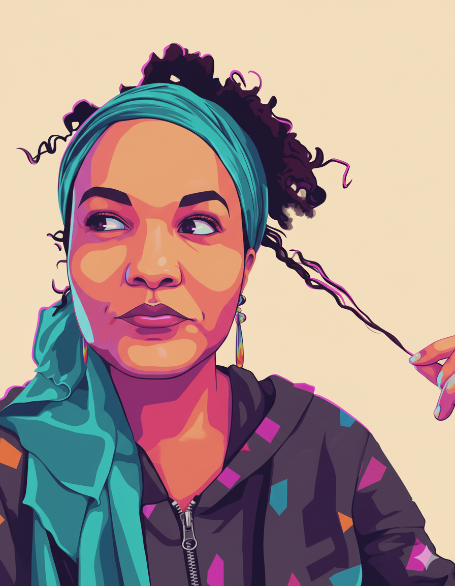

Backlots to Browsers
I cut my teeth in the art departments of film and TV. Watching
worlds come to life from behind the scenes taught me how to build
with precision, pace, and mood. Now I bring that same eye to the
web: architecting custom WordPress themes, crafting React and Vue
interfaces, and building Universo da Doçura — a dessert atlas that
treats every screen like a carefully framed shot.
The Story in Progress
Front-End & WordPress developer based in Brooklyn, NY
The sets are digital now, but the instincts remain. I still frame
every page with intention — shaping moments, not just modules. From
a custom WordPress dessert atlas with CPTs, MU-plugins, and Swiper
sliders to React and Vue apps that explore music, memory, and
ritual, I’m building a connected ecosystem of projects that reflect
where I’ve been and where I’m headed as a developer.
I’m especially interested in roles where I can own the front-end
experience, collaborate closely with designers, and keep pushing my
WordPress and React skills on real products that care about both
story and craft.
